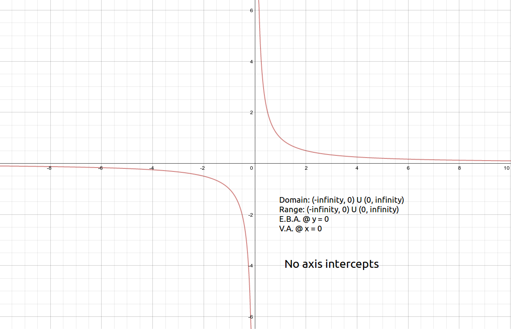
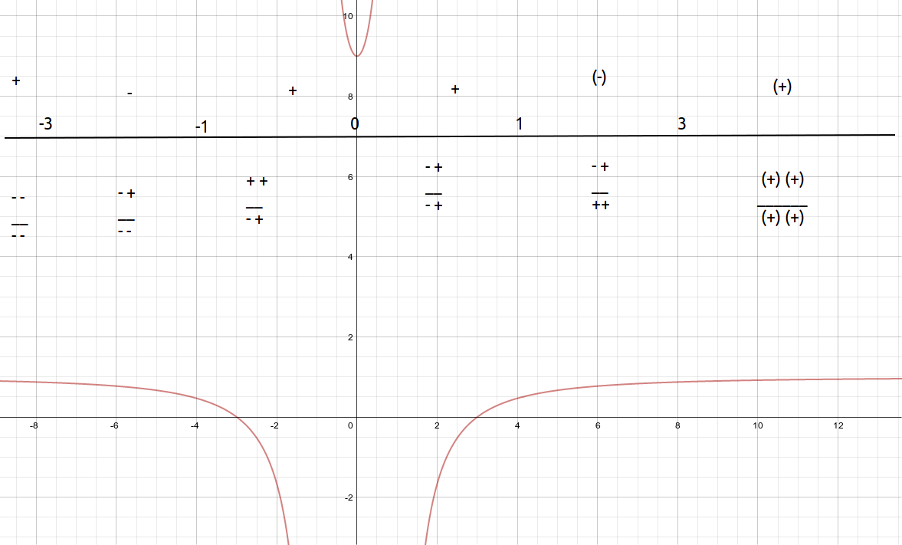

Rational Functions, Their Graphs, And Applications¶

Graphs of rational functions including all intercepts and asymptotes¶
Source: I remembered the reciprocal function from the 12 basic functions, so I got it from there.
Explanation:
This artifact demonstrates graphs of rational functions including all intercepts and asymptotes.
There is an asymptote at \(x = 0\) because if x were ever 0 the function would be undefined (you can’t divide by zero).
There is an asymptote at \(y = 0\) because the numerator is 1. One slice of the pie is larger than 0 slices of the pie.
There is no x-intercept and there is no y-intercept because of the asymptotes (y = 0, and x = 0).
Artifact:
\(\text{Graph of }f(x) = {1 \over x}\)
Algebraic manipulation of rational functions¶
Source: Notes
Explanation:
This artifact demonstrates algebraic manipulation of rational functions.
Here I demonstrate that I find rational zeroes by manipulating a rational function into linear factors.
Artifact:
Find all of the rational zeroes for \(t(x) = 3x^3 + 4x^2 - 5x -2\)
Using the rational zero theorem: \(\pm1, \pm2 \over \pm1, \pm3\)
Synthetic Division (\({3x^3 + 4x^2 - 5x -2 \over (x-1)}\))
| 3 | 4 | -5 | -2 |
|---|---|---|---|
| 0 | 3 | 7 | 2 |
| 3 | 7 | 2 | 0 |
\((x-1)(3x^2 + 7x + 2)\)
\((x-1)(3x + 1) (x+2)\)
Utilizing rational functions through applications¶
Source: Online
Explanation:
This artifact demonstrates utilizing rational functions through applications.
Artifact:
T=(AB)/(A+B), gives the time T, it takes for two workers to complete a particular task.
A+B represents the time it would take for each individual worker to complete the identical task.
It takes Joe 2 hours to weed the garden, and it takes Joe’s older brother twice as long.
Estimate how long it would take for the two of them to complete the task together.
A = 2, B = 4
\(T = {2 * 4 \over 2 + 4}\\ T = {8 \over 6} = {4 \over 3} = 1 {1 \over 3} = \text{ 1 hour and 20 minutes}\)
Solving rational functions inequalities¶
Source:
Explanation:
This artifact demonstrates solving rational functions inequalities.
Artifact:
\({x^2 -9 \over x^2 -1} < 0\)
\({x^2 -9 \over x^2 -1} == {(x-3) (x+3) \over (x-1)(x+1)}\)
\({x^2 -9 \over x^2 -1} < 0 \text{ when } -3 < x < -1 \text{ or } 1 < x < 3\)
:math:`{x^2 -9 over x^2 -1} < 0 when `